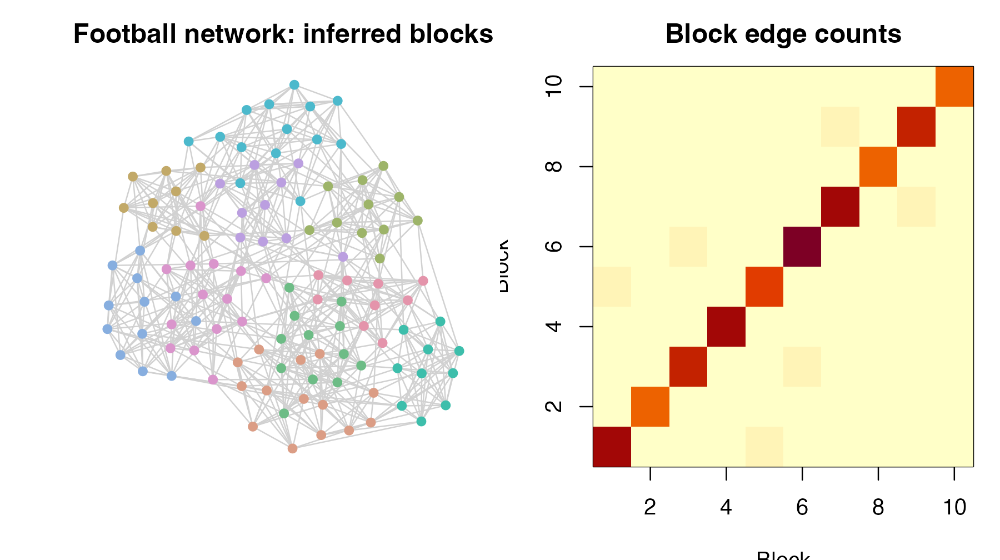
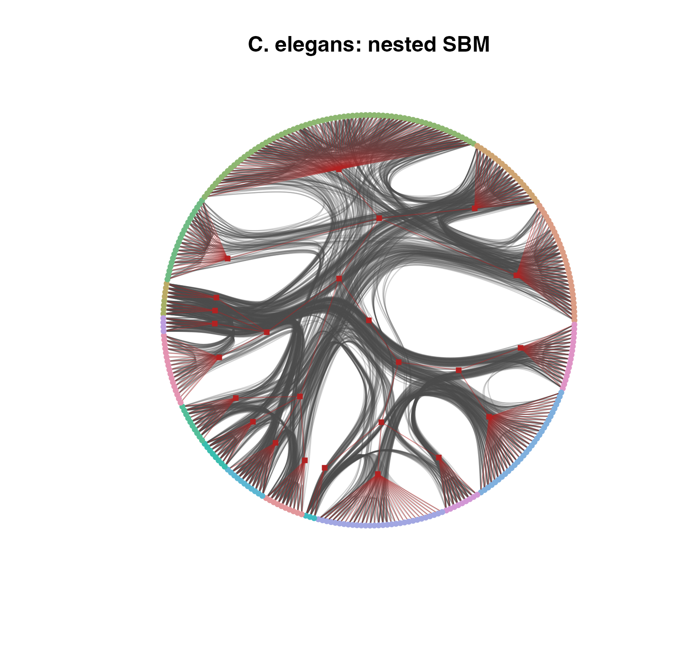

Stochastic Block Models & Hierarchical Partitions
Source:vignettes/blockmodels-and-hierarchy.Rmd
blockmodels-and-hierarchy.RmdThis article brings together the football,
celegans, and model_selection cookbook
workflows, introducing flat and hierarchical (nested) stochastic block
models (SBMs) and minimum-description-length (MDL) model selection
between degree-corrected (DC) and non-degree-corrected (NDC)
variants.
1. Flat SBM inference on the college football network
In a flat SBM, each vertex \(i\) is
assigned to a group \(b_i \in \{1, \dots,
B\}\), and we minimize the exact microcanonical description
length \(\Sigma(A, b)\) combining the
graph likelihood and the prior entropy of the partition and block edge
counts. compare_blockmodels() fits both degree-corrected
and non-degree-corrected models and computes the posterior odds ratio
between them.
football <- load_or_fallback_football()
g <- football$graph
set.seed(43)
comparison <- compare_blockmodels(g)
print(comparison$comparison)
#> model description_length
#> 1 non-degree-corrected 1740.158
#> 2 degree-corrected 1787.363
state <- comparison$best_state
block_sizes(state)
#> 1 2 3 4 5 6 7 8 9 10
#> 14 9 11 12 10 14 12 10 14 9
pos <- football$positions
edges <- graph_edges(g)
groups <- match(block_membership(state), sort(unique(block_membership(state))))
colors <- grDevices::hcl.colors(max(groups), "Dynamic")
old_par <- graphics::par(mfrow = c(1L, 2L), mar = c(3.5, 3.5, 2.5, 1))
graphics::plot(pos, type = "n", xlab = "", ylab = "", axes = FALSE, asp = 1)
graphics::segments(pos[edges[, 1L], 1L], pos[edges[, 1L], 2L],
pos[edges[, 2L], 1L], pos[edges[, 2L], 2L], col = "grey82")
graphics::points(pos, pch = 19L, col = colors[groups], cex = 0.85)
graphics::title("Football network: inferred blocks")
counts <- block_edge_counts(state)
graphics::image(seq_len(nrow(counts)), seq_len(ncol(counts)), counts,
xlab = "Block", ylab = "Block", main = "Block edge counts")
graphics::par(old_par)2. Hierarchical (nested) SBM on C. elegans
Flat SBMs have a resolution limit proportional to \(\sqrt{N}\) when \(B\) grows. The nested SBM resolves this by modeling the block multigraph recursively as another SBM at higher levels \(\ell = 1, 2, \dots, L\).
celegans <- load_or_fallback_celegans()
g_ce <- celegans$graph
set.seed(1)
nstate <- minimize_nested_blockmodel_dl(g_ce)
print(nstate)
#> <nested block state: degree-corrected, 10 levels, description length 8581.5135 nats>
#> l: 0, N: 297, B: 17
#> l: 1, N: 17, B: 5
#> l: 2, N: 5, B: 2
#> l: 3, N: 2, B: 1
#> l: 4, N: 1, B: 1
nested_summary(nstate)
#> level N B description_length
#> 1 0 297 17 7819.89474
#> 2 1 17 5 633.80424
#> 3 2 5 2 105.61259
#> 4 3 2 1 22.20191
#> 5 4 1 1 0.00000
# Project a single vertex's group membership across every level of the hierarchy
v_id <- min(47L, graph_num_vertices(g_ce))
sapply(seq_len(nrow(nested_summary(nstate))) - 1L,
function(l) nested_project(nstate, l)[v_id])
#> [1] 5 1 1 1 1
# Inspect level-0 group sizes as a flat block state
level0 <- nested_level_state(nstate, 0L)
block_sizes(level0)
#> 1 2 3 4 5 6 7 8 9 10 11 12 13 14 15 16 17
#> 29 20 4 4 70 21 10 8 3 11 31 30 4 9 16 17 10
plot_hierarchy(nstate, main = "C. elegans: nested SBM")
3. Degree-corrected vs. non-degree-corrected nested model selection
Using compare_blockmodels(..., nested = TRUE) evaluates
whether empirical degree heterogeneity warrants the degree-corrected
microcanonical prior. On networks with broad degree distributions (such
as political blogs), the DC nested SBM achieves a decisively lower
description length; on nearly regular networks (such as college
football), the simpler NDC model is often preferred.
set.seed(1)
cmp_fb <- compare_blockmodels(football$graph, nested = TRUE, nruns = 3L)
print(cmp_fb)
#> <nested block model comparison>
#> non-degree-corrected: description length 1733.5257 nats
#> degree-corrected: description length 1782.0200 nats
#> ln Lambda (NDC vs DC): 48.4943, about 10^21 in favour of the non-degree-corrected model
cmp_fb$comparison
#> model description_length
#> 1 non-degree-corrected 1733.526
#> 2 degree-corrected 1782.020When network access to Netzschleuder is available, the same
comparison runs on polblogs (1,490 blogs,
19,090 directed links):
polblogs <- netzschleuder_network("polblogs")
set.seed(1)
compare_blockmodels(polblogs$graph, nested = TRUE)